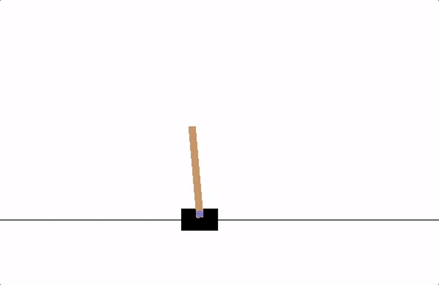

Reinforcement Learning 有两大类算法
- Policy-Based: 典型的如Policy Gradient,针对连续场景,直接优化得到policy
- Value-Based: 典型的就是DQN,一般适合离散空间,通过value 反推policy, 会出现策略退化
CartPole 问题
我们先看这个CartPole问题: 
CartPole 就是期望杆一直朝上; Reward 定义成竖直向上的时间,时间越长Reward 越高
Q-learning
Deep Q Network 之说以称之为 Deep Network 在于它其实只是 Q learning的一种特殊形式
我们先看一下什么是Q-Learning, Q-Learning 定义了一个函数$Q^{*}$,
$$
State \times Action \rightarrow \mathbb{R}
$$
如果我们能够得到 function, 那么我们就能够很容易构建出我们的RL ageng的policy:
$$
\pi^*(s) = \arg\max_a \ Q^*(s, a)
$$
根据Bellman equation:
$$
Q^{\pi}(s, a) = r + \gamma Q^{\pi}(s’, \pi(s’))
$$
好了，问题的关键在于如何去得到$Q^*$, 答案是很难得到😅，只能去近似
对于上述公式, 等式左右相减可以得到 temporal difference error $\delta$,
$$
\delta = Q(s, a) - (r + \gamma \max_a Q(s’, a))
$$
我们Q-learning 为了得到Q function, loss函数减小这个$\delta$,我们采用Huber Loss
$$
\mathcal{L} = \frac{1}{|B|}\sum_{(s, a, s’, r) \ \in \ B} \mathcal{L}(\delta)
$$
$$
\begin{split}\text{where} \quad \mathcal{L}(\delta) = \begin{cases}
\frac{1}{2}{\delta^2} & \text{for } |\delta| \le 1, \\
|\delta| - \frac{1}{2} & \text{otherwise.}
\end{cases}\end{split}
$$
Deep Q Network(DQN) 算法
那么Deep Q Network 是如何进行Q-learning的呢？ 其实道理很简单，就是有一个Deep Network 对这个Q function进行近似，好了既然涉及到写代码，我们必然要将输入和输出写清楚
- input: state & action
- output: return
训练过程
在Reinforcement Learning 中,我们的目标是训练policy 使得累计Reward达到最大: 累计Reward 可以表示为:
$$
R_{t_0} = \sum_{t=t_0}^{\infty} \gamma^{t - t_0} r_t
$$
其中, $\gamma$ 为discount factor.